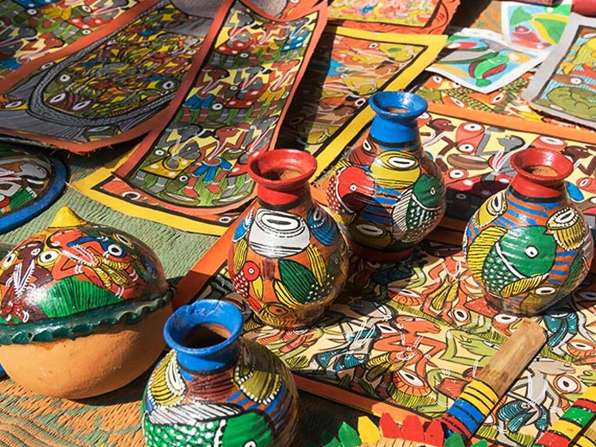

Arts
Arts:
This includes painting, drawing, sculpture, and photography. Artists often express emotions, ideas, or concepts through their work.
Performing Arts:
This category includes music, dance, and theater. These forms focus on the performance aspect and often involve collaboration with other artists.
Literary Arts:
This involves writing, poetry, and storytelling, allowing creators to express ideas and narratives through text.
Crafts
Handicrafts:
These are items made by hand, often using traditional techniques. Examples include pottery, weaving, and woodworking.
Textiles:
This includes sewing, knitting, crocheting, and quilting, where fabric or yarn is transformed into functional or decorative items.
Paper Crafts:
Activities like scrapbooking, origami, and card-making fall into this category, focusing on using paper creatively.
Jewelry Making:
Crafting accessories from materials like beads, metal, or clay.
Upcycling:
Transforming old or discarded items into new crafts, promoting sustainability.